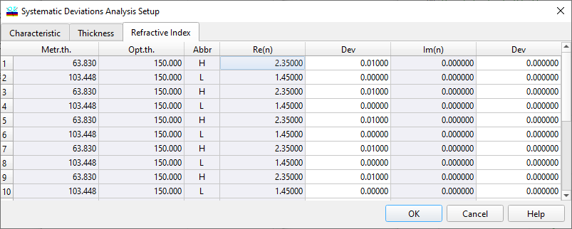

Refractive Index Systematic Deviations Setup
Refractive Index Systematic Deviations Setup
The Refractive Index page of the Systematic Deviations Setup allows for setting refractive index deviations and initiating the Systematic Deviations Analysis.
Systematic deviations of refractive indices Re(n) and extinction coefficients Im(n) should be entered as absolute values.

To specify systematic deviations for any layer material, select the corresponding cell in the columns labeled Dev next to either Re(n) or Im(n) columns. The “Column…” button allows for easy access to the Column Editor. It can be used for sophisticated editing of deviations for each material separately. The “OK” button accepts the specified values and initiates the Systematic Deviations Analysis procedure. The results are displayed in the Systematic Deviations window.
See also: